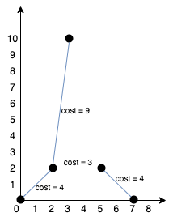

1584. 连接所有点的最小费用
Prim 最小生成树（O(n²) 版）：每轮把「离已建集合最近」的点拉进来，用新点刷新其余点到集合的距离。
思路
dist[i]= 点i到已建集合的最小曼哈顿距离；初始只有 0 号在集合里（dist[0] = 0）。- 每轮线性扫一遍取未加入点中
dist最小者u，total += dist[u]把它接入生成树。 u入集合后用它刷新其余点：dist[i] = min(dist[i], |u−i|)——这就是「经新点中转可能更近」。n ≤ 1000，稠密完全图上 O(n²) Prim 比 Kruskal（O(n² log n) 排序边）更优。
图解
最优解
1import java.util.*;2 3class Solution {4 public int minCostConnectPoints(int[][] points) {5 int n = points.length;6 boolean[] added = new boolean[n];7 int[] dist = new int[n]; // 各点到「已建集合」的最小曼哈顿距离8 Arrays.fill(dist, Integer.MAX_VALUE);9 dist[0] = 0;10 int total = 0;11 for (int round = 0; round < n; round++) {12 // 每轮把离已建集合最近的点拉进来（Prim 选点）13 int u = -1;14 for (int i = 0; i < n; i++)15 if (!added[i] && (u == -1 || dist[i] < dist[u])) u = i;16 added[u] = true;17 total += dist[u];18 // 新点 u 进集合后，用它刷新其余点的距离19 for (int i = 0; i < n; i++)20 if (!added[i])21 dist[i] = Math.min(dist[i], md(points, u, i));22 }23 return total;24 }25 26 private int md(int[][] p, int a, int b) {27 return Math.abs(p[a][0] - p[b][0]) + Math.abs(p[a][1] - p[b][1]);28 }29}题目
给你一个points 数组，表示 2D 平面上的一些点，其中 points[i] = [xi, yi] 。
连接点 [xi, yi] 和点 [xj, yj] 的费用为它们之间的 曼哈顿距离 ：|xi - xj| + |yi - yj| ，其中 |val| 表示 val 的绝对值。
请你返回将所有点连接的最小总费用。只有任意两点之间 有且仅有 一条简单路径时，才认为所有点都已连接。
示例 1：
输入：points = [[0,0],[2,2],[3,10],[5,2],[7,0]] 输出：20 解释：
我们可以按照上图所示连接所有点得到最小总费用，总费用为 20 。 注意到任意两个点之间只有唯一一条路径互相到达。
示例 2：
输入：points = [[3,12],[-2,5],[-4,1]] 输出：18
示例 3：
输入：points = [[0,0],[1,1],[1,0],[-1,1]] 输出：4
示例 4：
输入：points = [[-1000000,-1000000],[1000000,1000000]] 输出：4000000
示例 5：
输入：points = [[0,0]] 输出：0
提示：
1 <= points.length <= 1000-106 <= xi, yi <= 106- 所有点
(xi, yi)两两不同。
题面取自力扣当前版本。
数据快照 2026-11-04。题面版权归力扣所有，本站点仅供本人学习使用，请勿对外发布。